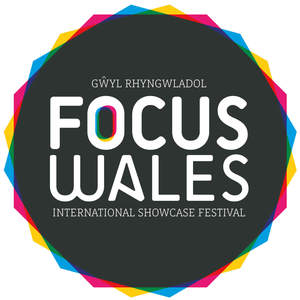
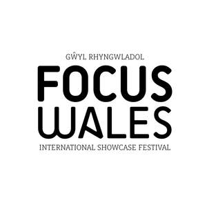

Trade Mark Journal No.2025/019 9 May 2025
UK00004192403 22 April 2025 (25,35,41)
Mark 1

Mark 2
Mark 3

- Class 25
- Jerseys [clothing]; Embroidered clothing; Wristbands [clothing]; T-shirts; Short-sleeved T-shirts; Printed t-shirts; Sweatshirts.
- Class 35
- Retail services connected with the sale of clothing and clothing accessories; Distribution of flyers, brochures, printed matter and samples for advertising purposes; Merchandising; Merchandizing; Product merchandising.
- Class 41
- Conducting of live entertainment events; Presentation of live entertainment events; Production of live entertainment events; Arranging and conducting of live entertainment events; Organisation of live performances; Live entertainment; Live music performances; Live music concerts; Live musical concerts; Live music shows; Performances (Presentation of live -); Live performances (Presentation of -); Presentation of live performances; Presentation of live entertainment performances; Live band performances; Band performances (Live -); Organisation of live shows; Live musical performances; Presentation of live show performances; Live stage shows; Production of live performances; Arranging and conducting of live entertainment events for charitable purposes; Live music services; Organisation of live musical performances; Live entertainment services; Presentation of live comedy performances; Production of live shows; Provision of live shows; Conducting of entertainment events; Entertainment services for producing live shows; Provision of live musical performances; Entertainment in the nature of live performances by rock groups; Production of live entertainment; Presentation of live comedy shows; Live show production services; Entertainment in the nature of live performances by musical bands; Provision of live entertainment; Organisation of entertainment events; Live performance services; Production of live entertainment features; Organization of entertainment events; Provision of live music; Arranging and presenting of live performances; Provision of facilities for live band performances; Live performances by rock groups; Presentation of live performances by rock groups; Live band performance services; Live performances by a musical bands; Conducting of cultural events; Presentation of live performances by musical bands; Organizing community sporting and cultural events; Live entertainment production services; Organising community cultural events; Organisation of entertainment and cultural events; Conference services; Organisation of meetings and conferences; Organisation of seminars and conferences; Arranging of an annual educational conference; Organising of education conferences; Organising of educational conferences; Arranging of conferences; Arranging conferences; Organization of educational conferences; Arranging of educational conferences; Arranging and conducting of conferences, congresses and symposiums; Conducting of business conferences; Conducting of educational conferences; Organisation of conferences, exhibitions and competitions; Arranging and conducting conferences and seminars; Arranging and conducting of conferences and congresses; Organising of meetings in the field of entertainment; Organisation of conferences related to entertainment; Organization of seminars; Arranging and conducting educational conferences; Organisation of congresses and conferences for cultural and educational purposes; Arranging and conducting of conferences; Conferences (Arranging and conducting of -); Arranging and conducting conferences; Planning of conferences for educational purposes; Arranging of conferences relating to entertainment; Organisation of seminars; Seminars; Arrangement of conferences for educational purposes; Organising of education seminars; Arranging and conducting of commercial, trade and business conferences; Organising of educational seminars; Organisation of educational seminars; Presentation of concerts; Conducting of seminars and congresses; Special event planning consultation; Arranging of workshops and seminars; Arranging and conducting of meetings in the field of entertainment; Organisation and presentation of shows; Consultancy relating to arranging and conducting of conferences; Arranging of conferences relating to cultural activities; Organisation of Webinars; Arrangement of conferences for recreational purposes; Special event planning; Consultancy and information services relating to arranging, conducting and organisation of conferences; Sporting event organization; Arranging of seminars; Film showings; Cinematographic film showings; Exhibition of video films; Conducting of film festivals; Presentation of films; Exhibition of cine films; Entertainment by film; Organisation of musical events; Performance of films; Presentation of movies.
Neal Thompson
Andrew Jones